Your browser doesn't support the features required by impress.js, so you are presented with a simple version of this presentation.
For the best experience please use the latest Chrome, Safari or Firefox browser.
Typical simulation of Ozone production
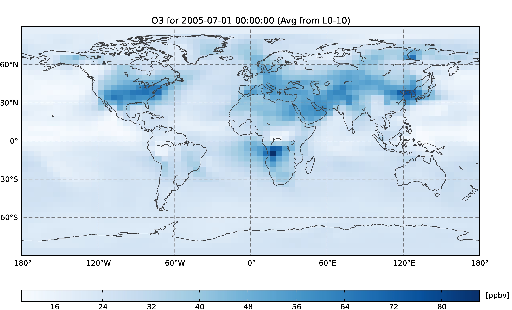
Large gridboxs can encompase a veriety of different areas
Imagin this scinario
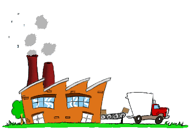

High NOx from pollution |
Low NOx from Forrest |
The Chemistry
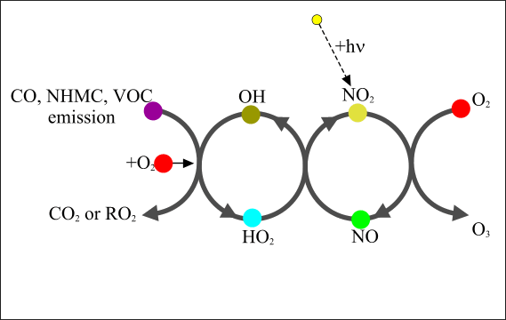
Ozone Production
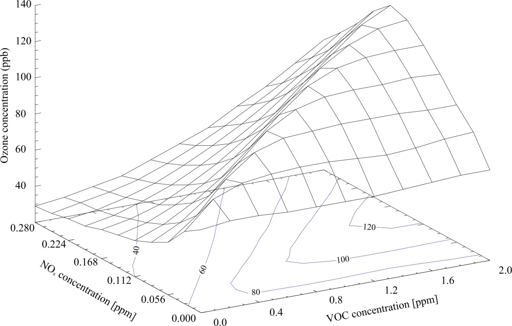
Pollution site
Forrest site
Resolution dependence
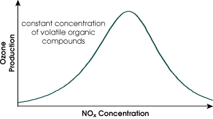
Forrest site
Pollution site
Average
Annual budget of Ozone vs Resolution
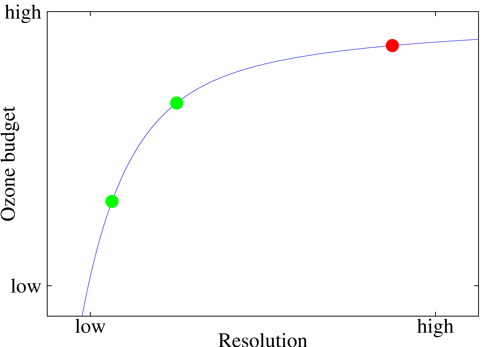
* Fitted results
Problems with increased resolution

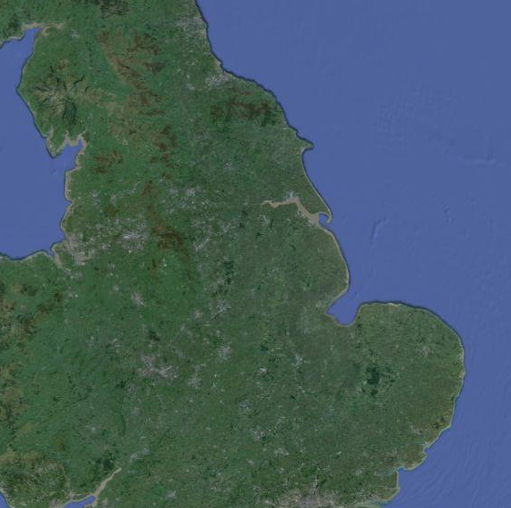
GEOS-Chem Profile
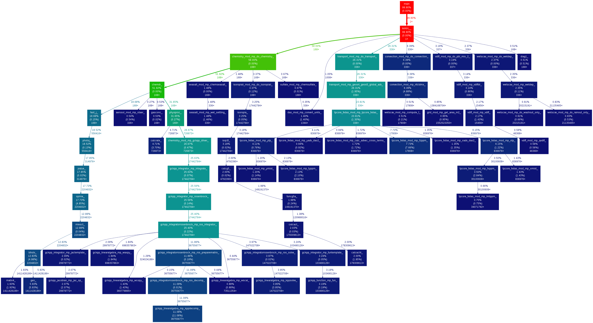
Intel Vtune
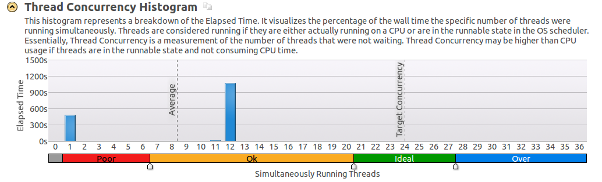
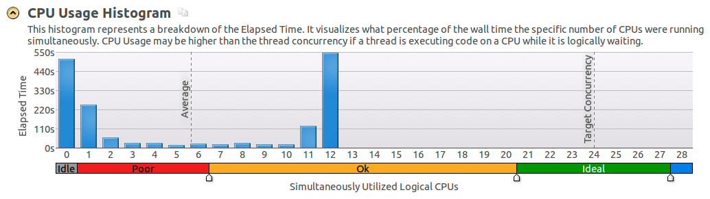
* Only run on 12 cores, so target efficiencys should all be halfed
OpenMP Overhead
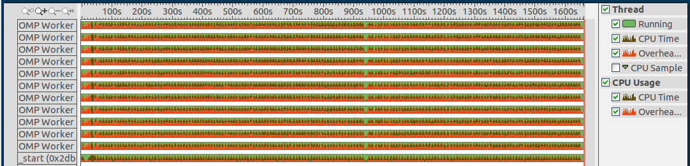
OpenMP is having to do a lot of work
Ideas for improvement
- Use OpenMP Tasks
- Use Checkerboard do loops
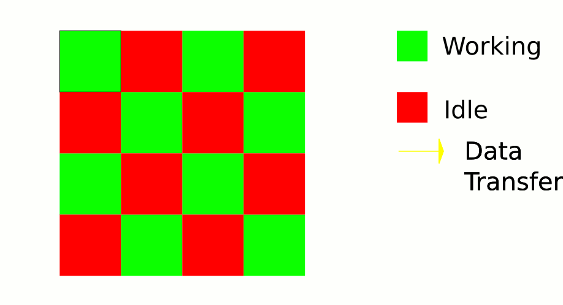
- Bigger loops
GEOS-Chem Chemical resolution

Imagin a less complex version of the next slide
Master Chemical Mechanism (MCM)
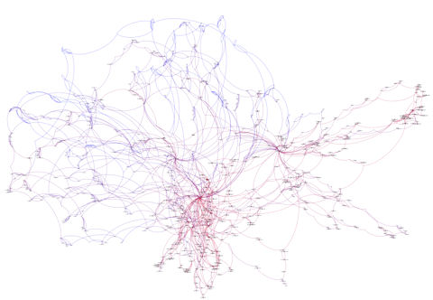
Sorry for the poor resoltuion
My plans for the MCM
- A complete chemistry mehcanism could be used as a benchmark
- A comparison of MCM to the current implimentation would be intersting
- From the MCM we could strip down areas to see which areas are most vital, and which areas can be comprimised for computational efficiency